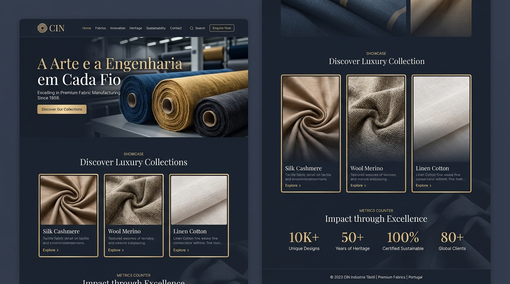

Excelência e Tradição na Produção Têxtil
A Arte e a Engenharia em Cada Fio
A CIT produz tecidos de alta performance, toque incomparável e acabamento impecável para confecções, estilistas, atacadistas e indústrias em todo o Brasil.
Fibras Selecionadas
100% Rastreabilidade
Pronta Entrega
Distribuição Nacional

Controle Rigoroso
Inspeção Lote a Lote
Eco-Friendly
Tinturaria Sustentável
0
Metros Produzidos / Mês
Capacidade fabril contínua
0
Padrões e Tecidos
Cores e texturas exclusivas
0
Pontualidade na Entrega
Compromisso com o cronograma
0
Tradição & Inovação
Expertise na indústria têxtil